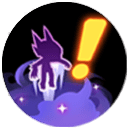
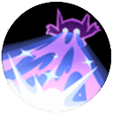

Sableye
Sableye é o suporte mais próximo de um assassino. Fica invisível, invade a jungle inimiga, rouba buffs e estraga o mental do adversário. É complexo, mas recompensador.
✨ Passiva: Prankster
Quando Sableye está fora da visão inimiga, entra em stealth e ganha 10% de velocidade. Ao entrar no campo de visão inimigo, permanece invisível por mais 1,7s. Sai do stealth ao atacar.
👊 Ataque Básico
A cada terceiro ataque, lança um ataque carregado que causa dano e reduz a velocidade em 20%. Se estiver em stealth, aplica medo por 1s, forçando o inimigo a se afastar.
Thief Nível 1 ou 2
Avança na direção designada, causando dano e roubando 5 de energia Aeos do inimigo. Se o inimigo não tiver energia, fica sem ação por 0,5s.

Shadow Sneak Nível 4Aplica um buff que deixa Sableye invisível após 1,5s e aumenta a velocidade. Ao entrar em stealth, prepara um ataque carregado com dano extra.
Knock Off Nível 4
Avança e retorna, causando dano e fazendo inimigos sem energia ficarem sem ação por mais tempo. Inimigos atingidos derrubam Aeos Energy.
Confuse Ray Nível 6
Lança um raio que confunde os inimigos, fazendo-os atacar aliados por 2s. Inimigos confusos têm o dano reduzido.
Feint Attack Nível 6
Lança energia Aeos falsa no chão. Se um inimigo pisar, explode causando dano ao longo do tempo e reduzindo a velocidade.

Unite Move: Chaos Glower Nível 8Sableye fica imparável e atira luz dos olhos em cone. Inimigos de frente são forçados a preparar retorno à base; se sofrerem dano, ficam sem ação por 1,5s.
🎯 Build Recomendada
Float Stone
Aumenta a velocidade de movimento quando fora de combate. Essencial para rotação e invisibilidade.
Exp. Share
Ganha experiência passiva por segundo. Deixa o Sableye relevante mesmo sem farmar.
Leftovers
Recupera uma porcentagem do HP máximo por segundo quando fora de combate.
🌅 Early Game Níveis 1-2
Invada a jungle inimiga para roubar buffs e atrasar o jungler adversário. Use Thief para roubar energia e atrapalhar. Tome cuidado com o head, pois você não tem escape sem X Speed.
☀️ Mid Game Níveis 4-6
Pegue Shadow Sneak para invisibilidade ou Knock Off para dano e controle. Use Confuse Ray para desorganizar o time inimigo ou Feint Attack como armadilha.
🌙 Late Game Níveis 8+
Use a ult para tirar um inimigo da luta ou forçar um retorno. Continue perturbando a rotação inimiga e protegendo seus carries.
💡 Dicas Gerais
- Sableye é ótimo para estragar o mental do jungler inimigo.
- Sempre tenha um propósito ao engajar: você não causa dano sozinho.
- Jogue como um defensor invisível: proteja seu carry sem ser visto.